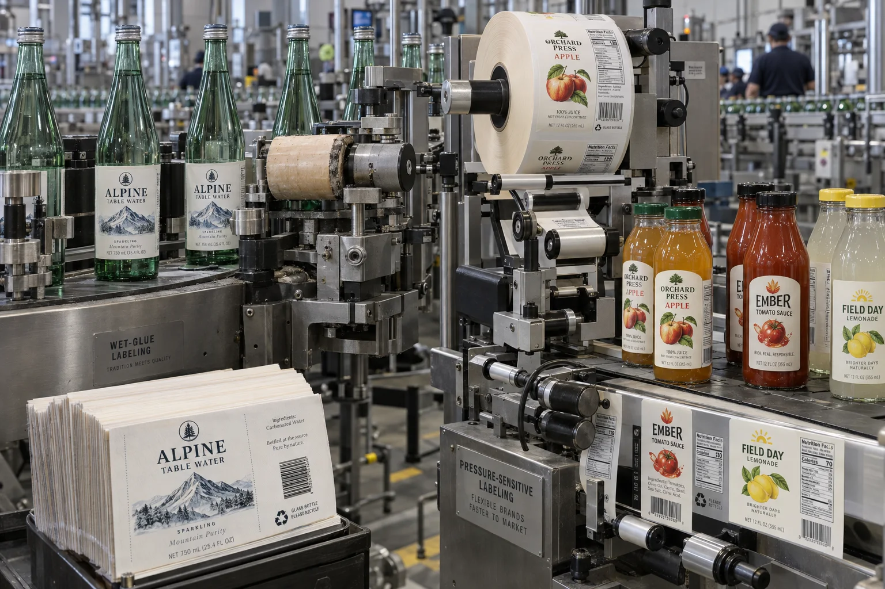
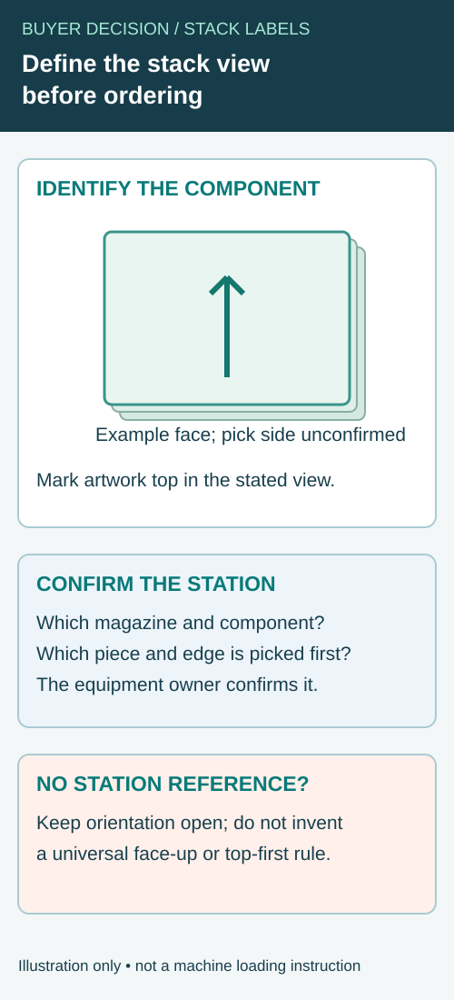

A cut-and-stack label quotation cannot be completed by copying a roll-label specification. The line receives individual labels in a defined presentation, while adhesive is applied as part of the labeling operation.
Get the line owner's actual stack and label requirements before approving the supplied format. This delivery-interface sheet complements the wet-glue versus pressure-sensitive cost comparison rather than assuming either system is inherently more professional.

AI-generated illustration retained on this article only. Fictional packaging, equipment and details; no measured result or actual customer/factory record.
Start from the actual station requirements
Ask the equipment owner for its current label specification and an identified accepted sample where available. Include the exact bottle and label role. The paper, finish and adhesive-application arrangement must be reviewed as a system; the printer should not infer them from a front artwork file.
| Delivery interface | Requirement to confirm |
|---|---|
| Label geometry | Finished cut dimensions, shape and approved file revision |
| Station and role | Intended magazine/station and front/back/neck component |
| Material/finish | Exact proposed construction and relevant handling limits |
| Presentation | Face and artwork orientation in the supplied stack/pack |
| Packing identity | SKU, revision, component, quantity basis and protection |
| Acceptance reference | Agreed sample and evidence from the intended application system |
Do not invent a universal stack count, grain direction or curl limit. The equipment owner and label/glue suppliers should resolve the actual requirements for that job and process. If a specification is missing, identify the field as unresolved before production.
Give each cut-and-stack component an orientation reference
“Artwork facing up” is incomplete when a bottle has separate front, back or neck labels. A stack can be face-up and still be presented in the wrong rotation for the intended magazine. Before approving supply, ask the equipment owner to identify the actual picking station and the required relation between the printed artwork and the stack. Do not translate a roll unwind number directly into a stack instruction.


Use a physical reference or a clearly marked nonproduction drawing for each component. Mark the viewing direction, printed face, artwork top, first label to be picked and the station or magazine to which the stack belongs. The equipment owner and label supplier should confirm the specific presentation; this table does not prescribe a universal face-up, top-first or stack-count rule.
| Reference | Record for each component | Open question |
|---|---|---|
| Component | SKU, front/back/neck role and approved artwork revision | Could two similar shapes be mixed? |
| Viewing direction | Which side of the stack the drawing or photo shows | Can the receiving team reproduce the view? |
| Printed face | Which surface and artwork are visible in that view | Does that surface match the station owner's instruction? |
| Artwork top | Identifiable top edge or other agreed mark | Is the rotation unambiguous for this specific shape? |
| First picked piece | Edge and layer that the actual mechanism will take first | Is the proposed presentation confirmed for the station? |
| Packaging identity | Component, quantity basis, reference sample and carton marks | Does the outer mark identify the enclosed stack? |
| Exception | Missing station detail, sample or conflicting instruction | Who can resolve it before printing or repacking? |
Compare the drawing with the actual sample
For an illustrative beverage order, suppose a front label and a neck label use the same brand colors but different shapes. One drawing that says “face up” may not tell the receiving team which component the magazine expects or which end of the neck artwork leads into the relevant mechanism. Obtain a named station reference from the line owner and compare it with the supplied sample and packing identity.
If the station can accept more than one presentation, record the positions it actually supports and who will make any changeover adjustment. Do not promise that rotating the outer carton will correct an internally mixed stack. If orientation is wrong or the component identity is uncertain, preserve the supplied arrangement and ask the responsible owner how to inspect or repack it without losing the evidence.
Keep supply format and line responsibility separate
The converter may control how pieces are packed; the co-packer controls how its own station is loaded. Make the boundary visible in the order and agree who confirms a representative stack before a full production release. If a label shape, finish, magazine or packing method changes, identify which previous reference still applies and whether a new review is required.
For the separate roll-fed job, use the roll direction guide. For stock receipt and production authorization, use the co-packer handoff guide. A confirmed orientation does not establish glue compatibility, reliable feeding or this site's ability to supply a particular cut-and-stack product; those remain project-specific questions.
To request a format review, supply the component roles, artwork references, station specification, example drawing or sample, quantities and any unresolved presentation requirements. The inquiry route should ask which supply format and scope the supplier can actually confirm.
Use the equipment example only for its proper purpose
Krones' cold-glue overview describes labels being picked from a magazine by glued pallets in its system. This is one equipment example of why stack supply and line operation belong together; it is not a setup instruction for every wet-glue machine or evidence that the pictured line is owned here.
Inspect the supplied pack against the approved reference
At receipt, compare component identity, quantity basis, presentation and visible condition with the agreed record. Preserve unopened material for any investigation. Do not repack a disputed delivery before recording how it arrived.
If the design changes, compare the new shape, finish and component role with the station requirement. A reusable artwork file does not establish unchanged magazine behavior. Have the relevant provider define any trial, and keep the sample identity with its observations.
For roll-fed station direction, use the separate roll record. For equipment purchase acceptance, define supported jobs. For co-packer receiving and release, agree ownership. These records should describe the actual supplied system rather than force stack labels into roll terminology.
Short answer
Wet-glue labels often suit long, stable bottle runs on dedicated equipment; pressure-sensitive labels usually suit flexible SKU mixes, fast changeovers and complex materials or shapes. Compare the complete applied cost, not only the printed-label price.
When a buyer asks which system is “more professional,” I know we are starting from the wrong end. Both can look excellent. The operational question is who applies the adhesive, what the line already owns and how often the artwork changes.
Two different production systems
| Factor | Wet glue / cut and stack | Pressure sensitive |
|---|---|---|
| Supply format | Individual labels in stacks | Pre-adhesive labels on rolls |
| Adhesive | Applied by labeling equipment | Built into the label construction |
| SKU changes | Can require magazine and glue-system setup | Often a roll and setting change |
| Materials | Commonly paper; specialized options exist | Paper, clear film, white film and textured stocks |
| Inventory | Compact stacks at high volume | Rolls include liner and cores |
| Line housekeeping | Glue preparation and cleanup matter | Liner waste and roll handling matter |
A composite sparkling-drink expansion
This is a composite planning example. A regional drink producer runs one bottle and two high-volume flavors on a wet-glue line. Marketing adds six seasonal flavors and a clear-film premium range. The team considers replacing the entire label system because pressure-sensitive samples look modern.
In this hypothetical program, compare retaining the established route for stable SKUs with a separate evaluated route for new versions. Actual costs and line feasibility determine the answer.
Container condition changes the result
Bottle material, diameter variation, seams, surface energy, condensation and filling temperature affect application. A pressure-sensitive adhesive must match the surface and wet-use conditions. A wet-glue system needs compatible paper, adhesive chemistry and container handling. Neither method corrects a wet, dirty or highly inconsistent bottle by itself.
Unit price hides changeover economics
Wet-glue labels can be highly efficient for long repeated runs because the printed pieces contain no pressure-sensitive adhesive or liner. Pressure-sensitive labels may cost more per piece but reduce setup for multiple SKUs and make variable material choices easier. Include labor, cleanup, startup waste, downtime, obsolete inventory and liner disposal in the model.
Artwork and finish options
Pressure-sensitive production makes it straightforward to combine textured papers, clear no-label-look films, metallic stocks and specialty adhesives. Wet-glue labels can also use premium papers, varnishes, foil and embossing, but the finished label must remain compatible with magazine feeding, glue application and bottle performance.
Do not approve a finish from a flat sample alone. Apply production samples to filled bottles, pass them through conveyors and packing, then evaluate after the expected storage and moisture exposure.
Decision checklist
- List annual quantity and run size by SKU, not only total volume.
- Identify existing equipment, speed and changeover time.
- Document bottle material, shape, seam and surface condition.
- Define filling temperature, condensation and refrigeration.
- Compare label, glue, liner, labor, waste and cleanup together.
- Run decorated bottles through the actual pack-out and distribution route.
- Keep both formats if different SKU groups justify them.
For roll-fed application details, read our Hand Labeling vs Bottle Applicators guide. Brands considering a third format can compare Shrink Sleeves vs Pressure-Sensitive Labels.
Send the relevant project details
Discuss the required label supply format with bottle photos, artwork, quantities and the equipment owner's specification. State whether the required route is cut-and-stack or pressure-sensitive rolls and ask which supply options can be confirmed. The form opens an email draft; send files through listed email or WhatsApp. Cut-stack manufacturing or glue-system support is not assumed available here.